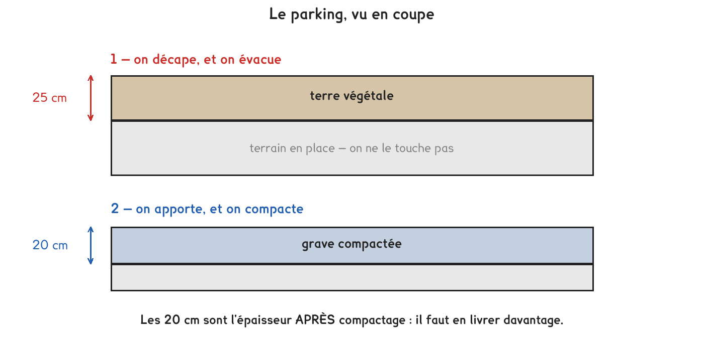

CAP · défi de dépassement · niveau 2
Un seul chantier, du premier mètre cube à la décision finale. Deux coefficients qui vont en sens contraire, et pourtant on multiplie dans les deux cas.
4 questions · 8 exercices · 1 repli · 1 figure
Savoirs travaillés

La terre gonfle, la grave se tasse, et pourtant on multiplie dans les deux cas. L’erreur attendue est de diviser par 1,15 sur la grave : il en manquerait un quart du chantier.
Le chantier. Créer un parking de 45 m sur 22 m. Décaper la terre végétale sur 25 cm et l’évacuer, puis apporter une couche de grave de 20 cm, une fois compactée.
Pour la terre. Foisonnement 25 % · bennes de 14 m³ · 95 € le voyage à la décharge.
Pour la grave. Elle se tasse au compactage : en livrer 15 % de plus en volume · masse volumique 1,9 t/m³ · prix 28 € la tonne.
Pour le matériel. Pelle et compacteur : 620 € par jour, sur 3 jours.
On oublie que la location ne dépend pas de la surface. Elle coûte 1 860 € que le parking fasse 990 m² ou 800 m². C’est ce qui fait que réduire la surface de 19 % ne fait pas baisser le coût de 19 %, et c’est la dernière question du défi.
Pour aller plus loin
Le foisonnement et le compactage semblent opposés : l’un gonfle, l’autre tasse. Pourtant les deux se traduisent par une multiplication.
Pour la terre, on part du volume du trou et on cherche ce qu’il y aura dans les bennes : plus grand, donc × 1,25.
Pour la grave, on part du volume qu’on veut une fois tassé et on cherche ce qu’il faut livrer : plus grand aussi, donc × 1,15.
Dans les deux cas, le nombre cherché est le plus gros des deux. Se poser cette seule question (lequel des deux volumes est le plus grand ?) suffit à trouver le sens.
Exercice · GE
Quelle est la surface du parking ?
Exercice · GE
Quel volume de terre végétale faut-il décaper ?
Exercice · AA
Combien coûte l’évacuation de cette terre, une fois foisonnée ?
Exercice · AA
Quel volume de grave faut-il commander, avant compactage ?
Exercice · AA
Combien coûte cette grave ?
Exercice · AA
En ajoutant la location des trois jours, quel est le prix de revient au mètre carré de parking ?
La carte blanche du défi papier : deux pourcentages qui devraient être égaux et ne le sont pas.
Exercice · AA
Le client réduit son parking à 40 m sur 20 m. De quel pourcentage le coût total baisse-t-il ? Donnez-le au dixième.
Exercice · AA
La surface baisse de 19,2 %, le coût de 17,3 % seulement. Expliquez pourquoi, en nommant précisément ce qui, dans ce devis, ne diminue pas quand la surface diminue.
Défi de dépassement, niveau 2. Aucun corrigé ; rien n'est enregistré, rien n'est noté.